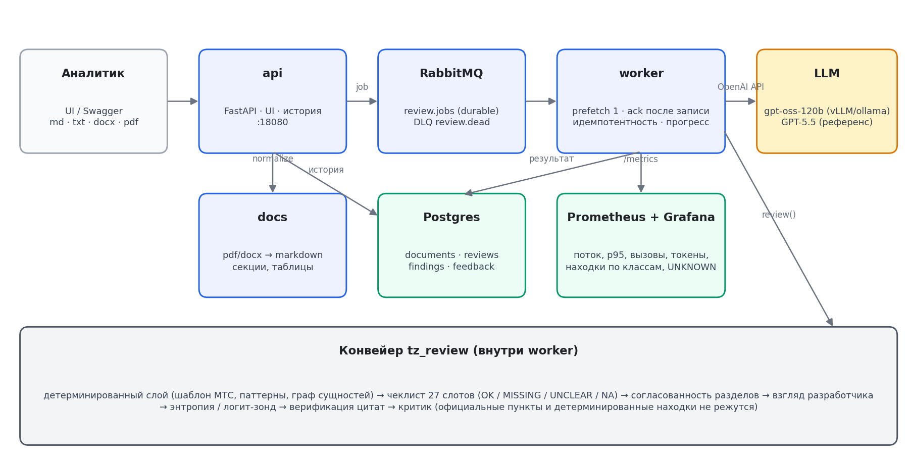

AI Talent Hub · Demo Day · кейс МТС NET0:00–0:30 · продукт
DocReview AI
01 · продукт
Инструмент для анализа документации
Ассистент аналитика, который выявляет в технических заданиях неоднозначности, пропуски и потенциальные проблемы.
02 · для кого
Аналитик МТС NET
Получает «второго читателя» перед передачей ТЗ. Инструмент подсказывает, но не принимает решение за человека.
03 · проблема
Чем позже найдена проблема, тем дороже исправление
Часть проблем обнаруживается только в разработке или тестировании. ТЗ возвращается на уточнение, а команда повторно согласует, дорабатывает и проверяет решение.
Коротков Леонид Вячеславович
AI Engineer · 1 курс · @fDAFXРыженко Виктор Алексеевич
AI Engineer · 1 курс · @RyzhenkoViktorСокол Тимофей Александрович
AI Product · 1 курс · @xcmgg
Ценность0:30–1:00 · ценность
Экономит время и ресурсы для разработки ТЗ
Время
Фокусирует внимание
Аналитику приходится читать большой объём документации. DocReview AI выделит потенциально проблемные места и поможет их быстро исправить.
Итерации
Сокращает возвраты ТЗ
Неоднозначности и пропуски выявляются до передачи документа, поэтому требуется меньше повторных уточнений и согласований с разработкой.
Деньги
Снижает цену ошибки
Поможет найти ошибку на раннем этапе, что сократит затраты на исправление реализации, повторное тестирование и работу всей команды.
Демо · один сценарий1:00–3:10 · демо
Демонстрация продукта
место для демо
Техническая часть · архитектура
Архитектура решения

Техническая часть · датасет
Датасет и разметка
01 · case data
Исходные тестовые данные
Исходные данные состоят из трёх примеров документов:
Описание потоков данных
Описание данных системы источника
Описание витрины-агрегата
3 примера ТЗ
Все документы обезличены: реальные названия заменены нейтральными идентификаторами.
02 · golden set
Разметка сильными моделями
Сильные модели сопоставили каждое ТЗ с шаблоном, 8 пунктами и матрицей дефектов. Каждая проблема привязана к фрагменту и коду.
Несколько моделей анализируют каждый документ
Результаты объединяются и очищаются от дублей
Формируется набор эталонных ТЗ
3 эталонных ТЗ
В golden set зафиксировано 36 дефектов с привязкой к фрагментам документов.
03 · benchmark
Фабрика данных
Пайплайн генерации датасета для оценки модели путём внесения контролируемых ошибок в golden set.
Выбирает тип и сложность ошибки
Вносит ошибку в исходный документ
Автоматически сохраняет эталонный ответ
33 контрольные ошибки
Для каждой ошибки известны её тип, сложность и ожидаемый результат проверки.
Техническая часть · метрики
Метрики качества
место для метрик и результатов оценки
Техническая часть · эксперименты
Проверенные гипотезы
место для результатов экспериментов
Готовность и следующий шаг4:10–5:00 · финал
MVP работает — теперь нужно доказать бизнес-эффект
Сделано
Ключевой сценарий воспроизводим end-to-end
Self-hosted модель работает в контуре
Все 4 результата из брифа в отчёте
Проверено
15 из 16 дефектов целевого ТЗ
88% точности по слепой разметке
Замечания привязаны к фрагментам
Планируется · 2–4 недели
Закрытый тест на 5–10 новых ТЗ
Оценка замечаний аналитиками NET
Внутренний ориентир: ≥70% полезных
DocReview AI уже находит 15 из 16 размеченных проблем в целевом ТЗ и объясняет, что уточнить.
Следующий шаг — подтвердить полезность на 5–10 новых документах вместе с аналитиками NET.
Appendix · ответыQ&A
Короткие ответы на вопросы комиссии
Почему не один промпт?
Даже сильный промпт пропустил 6 из 6 нарушений шаблона. Конвейер проверяет их правилами и обязательным чеклистом.
Что с данными?
На тестах — обезличенные ТЗ МТС. В прод-сценарии документы и история проверок остаются внутри контура заказчика.
Сколько стоит?
Основная статья — GPU для self-hosted модели. Точную стоимость считаем по реальной нагрузке пилота и выбранной модели.
Если метрика упадёт?
Любое изменение сначала проходит канарейку и фиксированный бенч. Не прошло порог — возвращаем предыдущую конфигурацию.